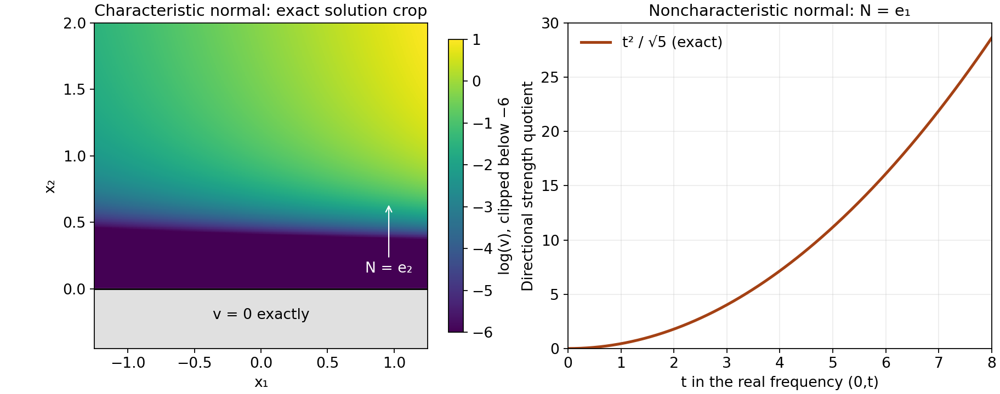

Every normal from a polynomial strength imbalance
Written by GPT-6.1 Sol (OpenAI), Ultra reasoning effort, October 2026. Original expression and original illustrations: CC0.
An imbalance in full polynomial strength does not single out a direction. For each noncharacteristic normal, bounded directional strength would imply bounded full strength, which contradicts that imbalance. The real-frequency construction therefore applies in every such direction. A characteristic normal requires the separate general homogeneous-equation existence theorem, including the lower terms of the symbol. We keep these two inputs distinct.
Proof ingredients and conventions
The written construction in Flat half-space solutions from real frequency rays, equations (1)–(36), supplies the complete smooth solution, exact support, flat jets and global upper tail. It uses Real Laurent paths and the growth of normal windows and the algebraic and analytic prerequisites stated there; their open transitive dependencies are retained.
Planned prerequisite: exact characteristic-halfspace smooth homogeneous solution. For a nonzero polynomial B of degree d and a nonzero real normal M with B_d(M)=0, there is a smooth solution v of B(D)v=0 on all of R^n with support exactly {x:x dot M<=0}. The general proof remains planned. An elementary homogeneous flat profile does not supply this contract for arbitrary lower terms.
Use D=-i times differentiation. For a polynomial R, let
\[ S_R(\xi)=\left(\sum_\alpha |\partial^\alpha R(\xi)|^2\right)^{1/2}, \qquad S_{R,N}(\xi)=\left(\sum_{j=0}^m |\partial_N^j R(\xi)|^2\right)^{1/2}, \quad \partial_N=N\cdot\nabla_\xi . \tag{NC1} \]Terms above the degree vanish. Write Q weaker than P when S_Q<=C S_P on real frequency space. This is the full-strength convention in Operator strength and local inverses, Lemma 1.1. We prove the needed value-to-strength implication again below, so no new external black box is introduced by this reduction.
The finite-dimensional implication
For each polynomial P and every fixed B>0, Taylor's formula applied to each derivative gives a constant A_{P,B} such that
\[ S_P(\xi+h)\le A_{P,B}S_P(\xi) \quad(\xi\in\mathbb R^n,\ |h|\le B). \tag{NC2} \]Indeed, every entry on the left is a finite linear combination of entries on the right, with coefficients h^beta/beta! uniformly bounded on that ball. The norm of this finite matrix is bounded there. This uses no assumption that P is elliptic or homogeneous.
If d=degree Q, the real-unit-ball supremum is a norm on the finite-dimensional space of complex polynomials of degree at most d. A polynomial vanishing on a real open ball has every coefficient zero, by successive one-variable polynomial identities. Norm equivalence therefore gives
\[ S_Q(\xi)\le A_d\sup_{|h|\le1}|Q(\xi+h)|. \tag{NC3} \]Apply the norm equivalence to h -> Q(xi+h); its derivative vector at zero is precisely that in (NC1). Consequently a bound |Q(xi)|<=C S_P(xi), followed by (NC2) and (NC3), implies Q weaker than P. The converse follows by taking the undifferentiated entry of S_Q. Thus
\[ Q\prec P\quad\Longleftrightarrow\quad \sup_{\xi\in\mathbb R^n}\frac{|Q(\xi)|}{S_P(\xi)}<\infty . \tag{NC4} \]For nonzero P, some derivative of its top monomial is a nonzero constant, so S_P has a strictly positive global lower bound. The quotients in (NC4) are well defined, including in the case Q=0.
For any nonzero N, the multinomial expansion gives
\[ \partial_N^jP =\sum_{|\alpha|=j}\frac{j!}{\alpha!}N^\alpha\partial^\alpha P, \qquad S_{P,N}\le C_{m,N}S_P, \quad C_{m,N}^2=\sum_{j=0}^m\sum_{|\alpha|=j} \left|\frac{j!}{\alpha!}N^\alpha\right|^2. \tag{NC5} \]Cauchy–Schwarz first bounds each directional derivative by the corresponding coefficient-vector norm times the derivative-vector norm of order j. Summing and using the displayed sum as an upper bound proves (NC5). Its constant need not be optimal. It applies to arbitrary nonunit normals, and a phase factor (-i)^j in the symbol derivative does not change the norm.
The all-normal theorem and proof
Theorem (every prescribed normal, relative to the declared prerequisites). Let P be a nonzero constant-coefficient polynomial of degree m and let Q have degree at most m. Suppose Q is not weaker than P. For every N in R^n minus {0}, and every epsilon>0, there are smooth complex functions a,u on R^n such that
\[ (P(D)+a(x)Q(D))u=0, \qquad \operatorname{supp}u=H_N:=\{x:x\cdot N\ge0\}, \qquad \operatorname{supp}a\subseteq H_N, \qquad \sup|a|<\varepsilon . \tag{NC6} \]All derivatives of a and u vanish on the boundary. The smallness and infinite flatness follow from the real-frequency construction in the noncharacteristic branch; they also hold for a=0 in the characteristic branch. Hörmander's numbered corollary requires only the equation and its two support conditions. Dependence on N and epsilon is permitted. The theorem is conditional on the planned characteristic contract in its characteristic branch.
If m=0, Q has degree zero and is weaker than the nonzero constant P. Thus the hypothesis forces m>=1 and Q nonzero.
Fix an arbitrary N. If P_m(N)=0, then P_m(-N)=(-1)^mP_m(N)=0. Apply the planned contract with B=P and M=-N. It supplies a smooth u with P(D)u=0 and
\[ \operatorname{supp}u =\{x:x\cdot(-N)\le0\}=H_N . \tag{NC7} \]Take a=0. Its support is empty, so every assertion concerning a follows. Smooth u is identically zero on the open negative side; continuity of every derivative makes all its jets zero on the boundary. This treats arbitrary nonhomogeneous P; it does not replace P by P_m.
If P_m(N) is nonzero, Taylor expansion along the line xi+tN gives
\[ \partial_N^mP=m!P_m(N)\ne0. \tag{NC8} \]In particular S_{P,N} is positive. If S_{Q,N}/S_{P,N} were bounded by C, the undifferentiated entry, (NC5) and (NC4) would imply
\[ |Q(\xi)|\le S_{Q,N}(\xi) \le C S_{P,N}(\xi) \le C C_{m,N}S_P(\xi) \quad\Longrightarrow\quad Q\prec P, \tag{NC9} \]contrary to the hypothesis. The nonnegative directional quotient is therefore unbounded. The original degree condition and (NC8) verify every input of equation (1) of Flat half-space solutions from real frequency rays. The full construction in equations (1)–(36) of Flat half-space solutions from real frequency rays gives (NC6), with support of a in fact equal to H_N, arbitrarily small global norm, and all jets of a and u zero at the boundary. Its nodal quotient extension and nonzero upper tail are part of that proof. This completes the proof for every prescribed normal. ∎
This argument does not claim that the full-strength imbalance itself proves the general characteristic contract. Nor does it require a uniform coefficient or one solution serving every N simultaneously.
A lower-term example that distinguishes the two branches
Take n=2 and
\[ P(\xi)=\xi_1^2+1,\qquad Q(\xi)=\xi_2^2, \qquad S_P(\xi)=\sqrt{\xi_1^4+6\xi_1^2+5}. \tag{NC10} \]Along xi=(0,t), S_P=sqrt(5), while |Q|=t^2. Thus Q is not weaker than P. The degree hypothesis holds with m=2. For N=e_1, the normal is noncharacteristic and the exact directional quotient on that line is
\[ \frac{S_{Q,e_1}(0,t)}{S_{P,e_1}(0,t)} =\frac{t^2}{\sqrt5}\longrightarrow\infty . \tag{NC11} \]The real-frequency construction therefore supplies a perturbation and a solution supported exactly in {x_1>=0}. The function displayed next serves a different normal, N=e_2, which is characteristic because P_2(e_2)=0.
Define f(s)=exp(-1/s^2) for s>0 and f(s)=0 for s<=0, and set
\[ v(x_1,x_2)=e^{x_1}f(x_2). \qquad (-\partial_1^2+1)v=0, \qquad \operatorname{supp}v=\{x_2\ge0\}. \tag{NC12} \]To verify smoothness, each positive-side derivative of f is exp(-1/s^2) times a polynomial in 1/s. Every such expression, including any additional fixed negative power of s, tends to zero as s decreases to zero; substitute r=1/s and use r^k exp(-r^2)->0. Zero extension therefore has all derivatives continuous, inductively. Multiplication by e^{x_1} preserves smoothness and flat jets. Positivity at every x_2>0, together with zero on the negative side, proves the exact support. Direct differentiation proves the equation and uses the lower term +1. In contrast the flat profile f(x_2) by itself satisfies P(D)f=f, not zero. This is a direct example of the general characteristic conclusion, not a proof for all symbols.

Open full-size figure

Figure 1. Left: finite crop of the exact solution v in (NC12). Color shows log(v)=x_1-1/x_2^2 on the positive side, clipped below -6 for legibility; the gray negative side and boundary have v=0 exactly. The indicated normal is e_2 and the full mathematical support is the unbounded closed half-space, not this cropped rectangle. Right: the exact quotient t^2/sqrt(5) in (NC11) for the different normal e_1, at real frequencies (0,t). This is a symbol calculation, not a sample of the assembled real-frequency construction solution. Equations (NC9)–(NC12) and Exercises 1–2. Mathematical antecedent: Hörmander II, Corollary 13.6.2, printed p.202; general characteristic comparison: Hörmander I, Theorem 8.6.7, printed p.310. Original figure: GPT-6.1 Sol (OpenAI), Ultra; CC0.
Exercises with complete solutions
Exercise 1 (entry: why the lower term matters). For the symbols in (NC10) and normal e_2, calculate P(D)f(x_2) and P(D)(e^{x_1}f(x_2)). Explain exactly which support statement follows without the planned general theorem.
Solution. D_1^2 is minus the second x_1 derivative. The first function is independent of x_1, so P(D)f=f. For the second, partial_1^2(e^{x_1}f)=e^{x_1}f, hence P(D)v=0. The flatness calculation preceding Figure 1 proves that v is smooth, and v is strictly positive on x_2>0, so its support is exactly {x_2>=0}. This one symbol's characteristic conclusion is proved directly, using a=0. Arbitrary nonhomogeneous P with P_m(N)=0 still requires the planned contract; neither computation replaces it.
Exercise 2 (intermediate: changing and rescaling the normal). Keep (NC10). For N=c e_1 with real c nonzero, compute the directional quotient at (0,t). State which half-space the all-normal corollary supplies and why scaling causes no gap.
Solution. Along N, the derivatives of P at (0,t) are P=1, partial_N P=0 and partial_N^2 P=2c^2; higher terms vanish. Thus S_{P,N}=sqrt(1+4c^4). Q is independent of xi_1, so S_{Q,N}=t^2. The quotient is t^2/sqrt(1+4c^4), unbounded for every fixed c nonzero. Also P_2(c e_1)=c^2 nonzero. The real-frequency construction therefore supplies exact support {c x_1>=0}, the positive x_1 half-space for c>0 and the negative one for c<0. The constants may depend on c, and the theorem does not demand uniformity as c tends to zero.
Exercise 3 (advanced: bounded real ratios do not decide complex windows). Let P(xi_1,xi_2)=xi_1^2+xi_2^2+1 and Q=xi_2^2. Show that Q is weaker than P and that the real-frequency unboundedness hypothesis cannot hold for any nonzero N. Identify why this does not settle the separate complex-frequency theorem.
Solution. Put r^2=xi_1^2+xi_2^2. Then |Q|<=r^2<=|P|<=S_P, so (NC4) proves Q weaker than P. More directly S_Q^2=xi_2^4+4xi_2^2+4<=(r^2+2)^2. For each fixed N, the directional derivatives of Q have degree at most two, so S_{Q,N}<=C_N(1+r)^2. The denominator S_{P,N}>=|P|=1+r^2, and (1+r)^2/(1+r^2)<=2; hence the directional quotient is bounded. The real-frequency input equation (1) of Flat half-space solutions from real frequency rays fails for every normal. This says nothing by itself about normalized windows at complex frequency centers, their two independent scales or the negative imaginary derivative condition in the theorem in Complex frequency windows and exact half-space support. That theorem has separate hypotheses and must be checked on its own.
Current scope
The all-normal theorem is proved relative to its declared prerequisites, with both original branches, the total degree restriction, exact support, nonunit normals and the planned characteristic orientation preserved. The finite-dimensional value-to-strength argument is proved directly. The example, figure and three solved exercises retain the same two-branch distinction. The general characteristic proof remains planned.
References
- Lars Hörmander, The Analysis of Linear Partial Differential Operators II: Differential Operators with Constant Coefficients, Springer, 1983. Corollary 13.6.2, p.202.
- Lars Hörmander, The Analysis of Linear Partial Differential Operators I: Distribution Theory and Fourier Analysis, Springer, Theorem 8.6.7. The general characteristic-halfspace proof remains a planned prerequisite here.
The linked course lessons provide the written proof ingredients. These human references identify the mathematical antecedents; the precise planned contract remains explicitly conditional.